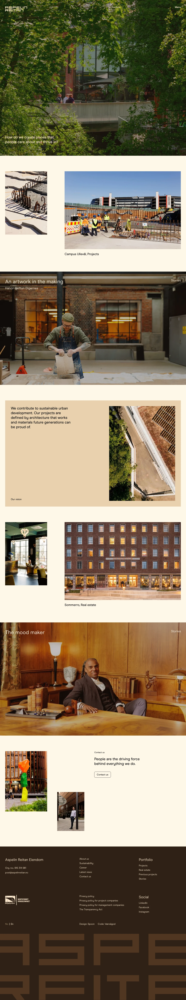

Aspelin Reitan 的 Design.md 主题展示，围绕编辑/机构、暖色调、暗色界面、AI组织页面。
Explore Aspelin Reitan's dark Other design system: Midnight Caviar #000000, Amber Sands #ffebd0 colors, ModernEra typography, and DESIGN.md for AI agents.

#ffebd0: #ffebd0#000000: #000000#fff8e9: #fff8e9#fee197: #fee197#2f2116: #2f2116#4f3622: #4f3622#987f61: #987f61#8f534e: #8f534e#ffffff: #ffffff#f0f1ef: #f0f1ef#333333: #333333#d7d7d7: #d7d7d7display: Interbody: Intermono: ui-monospacehints: Inter,ui-monospace